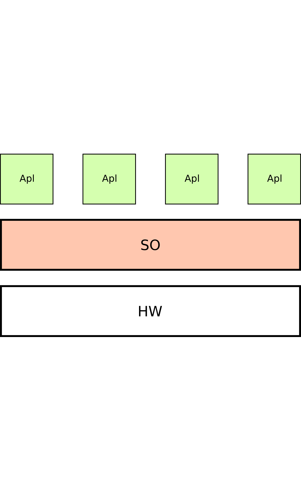
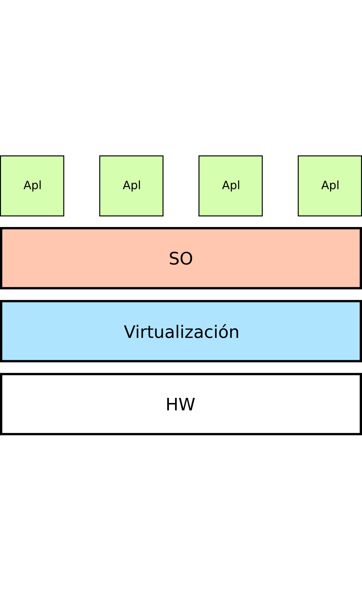
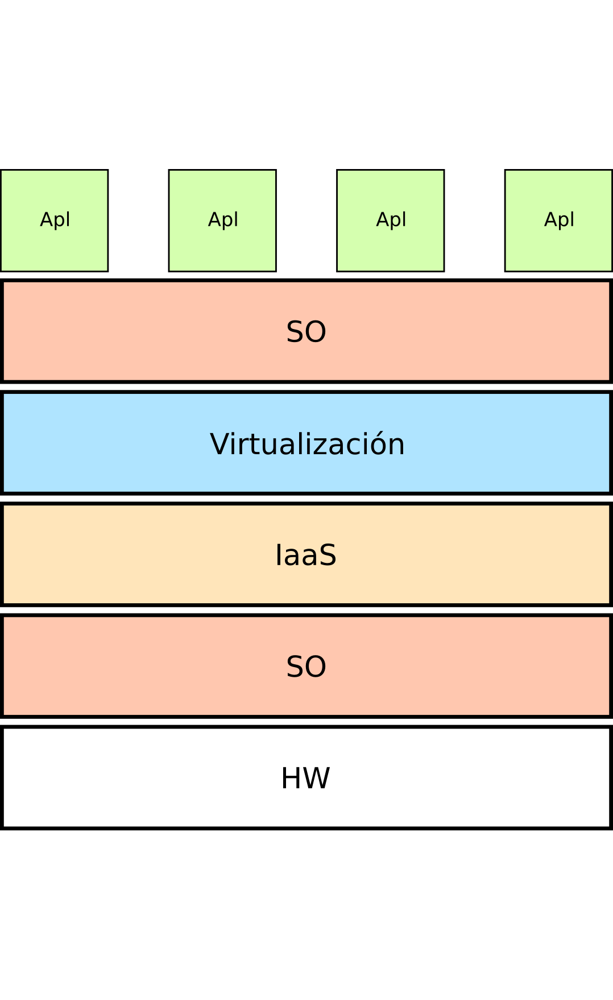
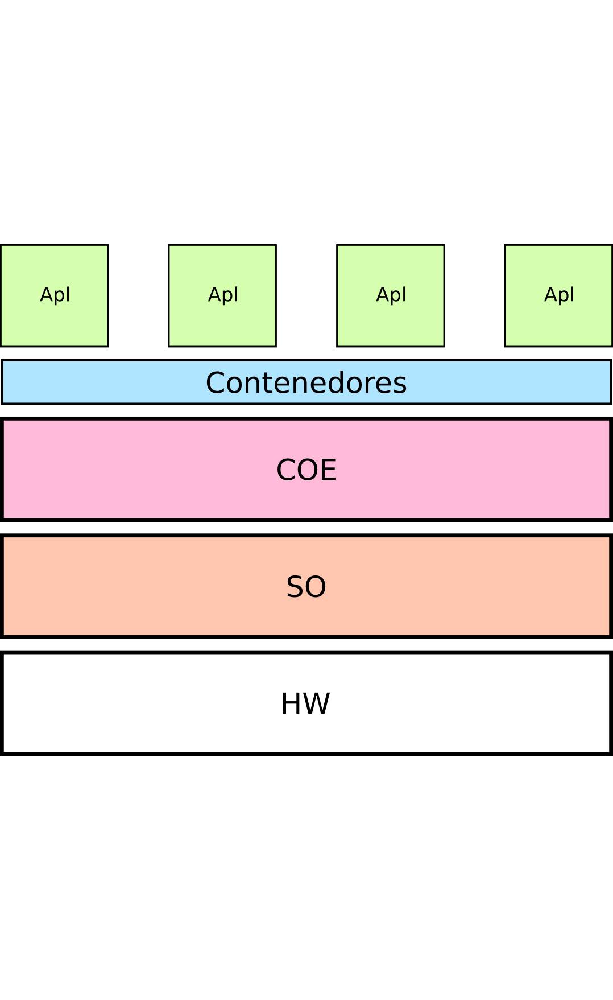
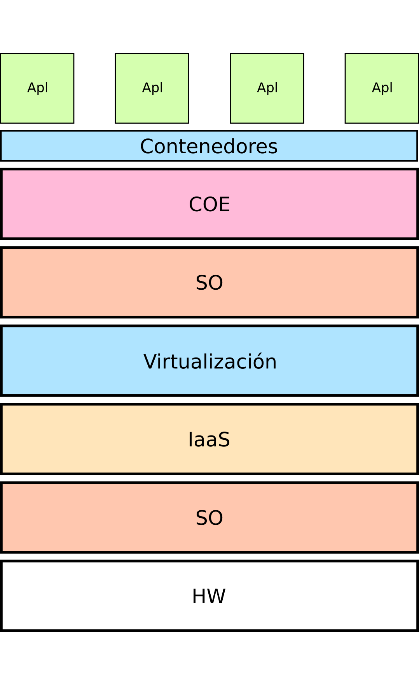
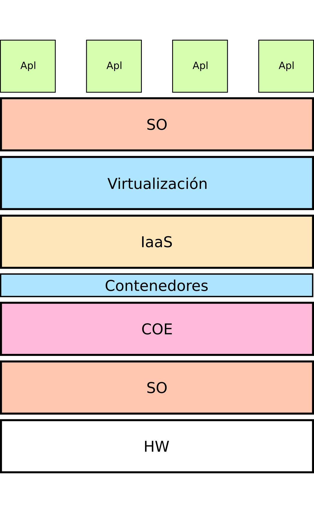
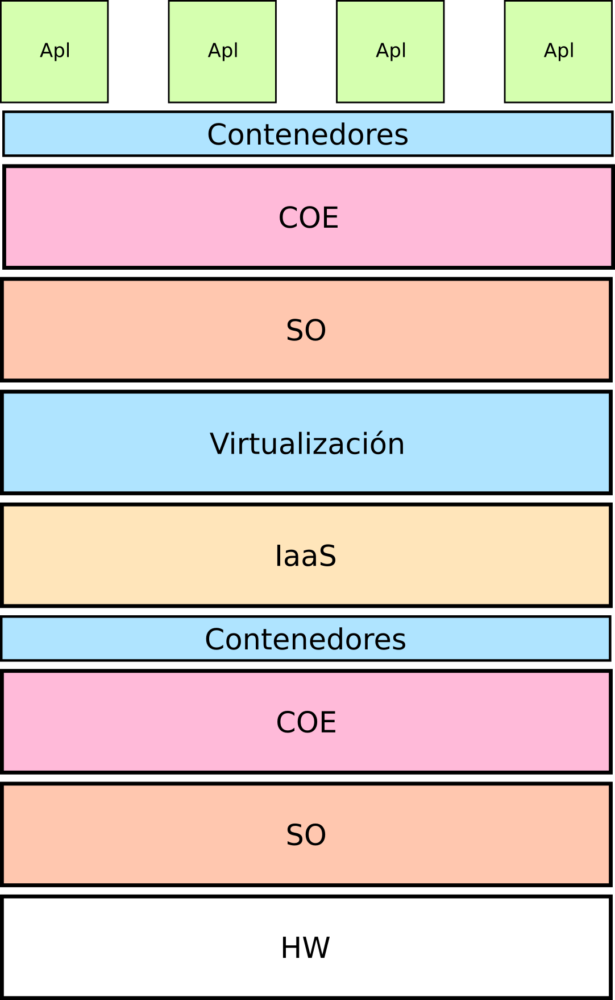
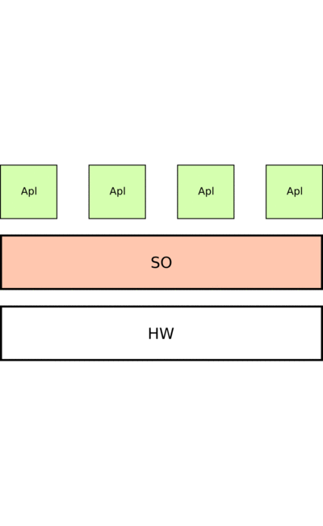

El concepto
Las múltiples capas de software que vamos interponiendo entre el hardware y las aplicaciones precisan que las gestionemos automáticamente
¿Qué capas?
- Virtualización
- Contenedores
- SDN
- SDS
- Infraestructura como servicio: IaaS
- Container Orchestration Engine: COE
IaaS
- El usuario gestiona sus recursos hardware mediante API rest
- Recursos elásticos
- Opciones:
- Nube pública: AWS, GCE, Azure, ...
- Nube privada con sw libre: OpenStack, Opennebula, ...
COE
- Software para gestionar aplicaciones sobre contenedores
- Orquestadores, herramientas de orquestación, COE, ...
- Muy relacionados con microservicios
- Muy adecuado para gestión de versiones y actualizaciones y buenas prácticas como CI/CD
- Opciones: Swarm, Mesos, DCOS, Kubernetes
Kubernetes-OpenStack
- OpenStack empieza a estabilizarse y gestiona eficazmente
virtualización de máquinas, redes y almacenamiento. El encaje de
contenedores no es tan claro
- Kubernetes es capaz de gestionar múltiples nodos (máquinas
virtuales o físicas) en los que se ejecutan contenedores sobre
docker o rkt, utilizando SDN y SDS de una forma limitada.
- ¿Dónde ubicaríamos OpenStack y Kubernetes en el
famoso ciclo
de sobreexpectación?
Despliegue sobre máquina física
- Despliegue tradicional
- Recursos estáticos gestionados manualmente
- Muchas limitaciones

Despliegue sobre máquina virtual
- Despliegue habitual hoy en día
- Mejor aprovechamiento de recursos
- Posible gestionarlo a mano

Uso de IaaS
- Pasamos a gestionar muchos nodos de forma centralizada
- Entorno más complejo
- Posibilidades enormes
- Elasticidad
- Cada capa de sw necesita instalarse, actualizarse y monitorizarse
- Necesidad de automatizar

Uso de COE
- Ideal para microservicios, CI/CD
- Sin elasticidad
- Cada capa de sw necesita instalarse, actualizarse y monitorizarse
- Necesidad de automatizar

COE sobre IaaS
- Ideal para microservicios, CI/CD
- Añadimos la elasticidad
- Más capas para gestionar
- Imperiosa necesidad de automatizar
- Pila habitual en nube pública

IaaS sobre COE
- Tratamos el sw de IaaS como microservicio
- Ideal para gestionar las actualizaciones de IaaS

IaaS sobre COE sobre IaaS
- Tratamos el sw de IaaS como microservicio
- Sobre el Iaas ponemos COE que aprovecha la elasticidad
- Las aplicaciones se pueden ejecutar sobre COE o directamente sobre IaaS
- Muuuchas capas

¿?
Pasamos de un sandwich mixto al sandwich club especial de la casa ;)

Automatizar
- Instalación
- Actualización
- Uso de recursos
Técnicas que se utilizan
- Aprovisionamiento de recursos
- Gestión de la configuración (CMS)
- Orquestación
- Infraestructura como código
Software que veremos
- ansible
- heat
- terraform
- ...